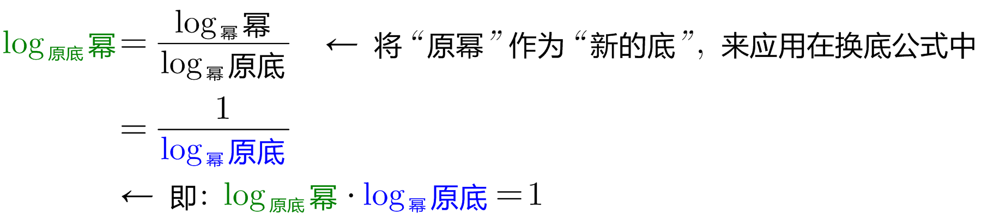
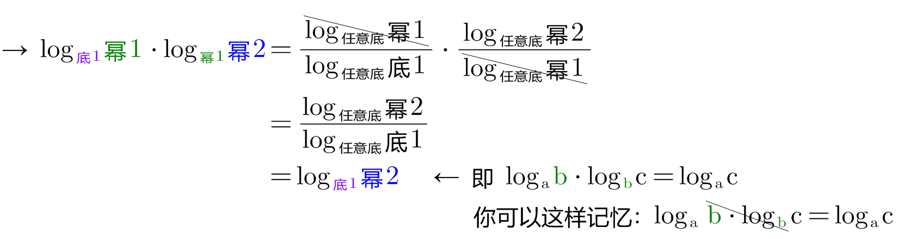
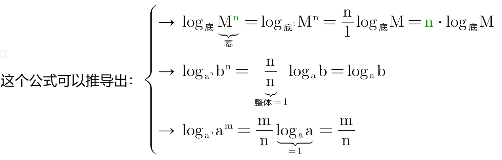

- 底数 Base Number
- 指数 Exponent
- 幂 Power
\( 底^指 = 幂 →→ log_底 幂 = 指 \)
\( log_{10} 幂 = lg 幂 \)
\( log_e 幂 = ln 幂 \)
\( \text{底}^{\overset{\text{指}}{\overbrace{\log _{\text{底}}\text{幂}}}}=\text{幂}
\)
\log _{\text{底}}\underset{\text{幂}}{\underbrace{\text{底}^{\text{指}}}}=\text{指}
\)
\( log_底 幂1 + log_底 幂2 = log_底 (幂1 \cdot 幂2) \)
\( \log _{\text{底}}\text{幂}1-\log _{\text{底}}\text{幂}2=\underset{\text{即: 底}^?=\frac{\text{幂}1}{\text{幂}2}}{\underbrace{\log _{\text{底}}\left( \frac{\text{幂}1}{\text{幂}2} \right) }}
\)
\( \log _{\text{原底}}\text{幂}=\frac{\log _{\text{任意底}}\text{幂}}{\log _{\text{任意底}}\text{原底}}
\) ← 换底公式
由换底公式, 可以推出以下这些常用结论:


\( \log _{a^n}b^m=\frac{m}{n}\log _a b \)
该公式的简单记忆法: 把 m 和 n, 上下保持不动, 直接向左平移到 log外面就行了.

\( \log _{\text{底}}\overset{\text{幂}}{\overbrace{M^n}}=n\cdot \log _{\text{底}}M
\)

\( \)
\( \)
| Firstname |
Lastname |
Savings |
| Bill |
Gates |
$100 |
| Steve |
Jobs |
$150 |
| Elon |
Musk |
$300 |